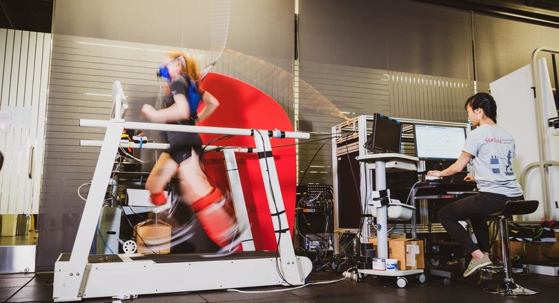
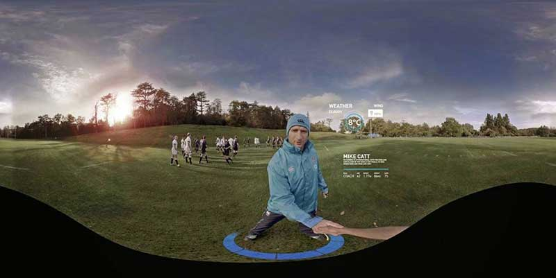
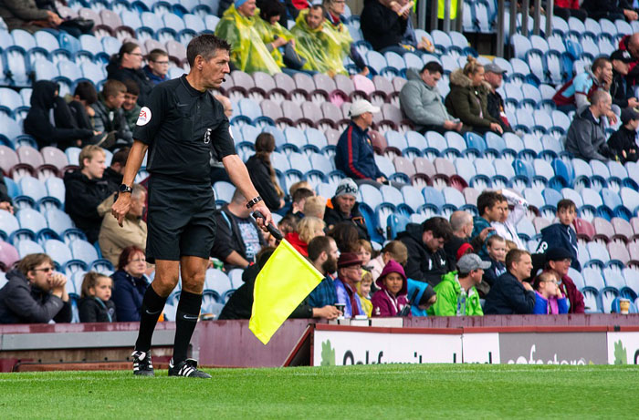

There are many people who want to start jogging but find it tiring. That is why an exoskeleton has now been developed for around your ankle. This helps you move, making running a lot easier. What this technology among other things, the relief of the load on your calves. It even works so well that your running is 15 percent less strenuous. The only drawback is that the device is very heavy. If you turn off the device but leave your ankle ok, walking costs 13 percent less energy.
Meer info

Virtual Reality is increasingly being used in sports technology. For example, VR is used to create lifelike training simulation, this to improve the software itself. This offers an athlete more opportunity to train his anticipation, improve his movement techniques and train endurance in order to make a difference compared to your opponent. It is also used by coaches to analyze the athlete's results and prepare a training program for his pupil.
Meer info

The VAR is a system used to review images and reverse any decisions. This ensures that sports become fairer and more fun to watch. The VAR is also used to support the referee if he's overlooked something that could affect the match. Examples in football checking whether an attacking player has been offside, reviewing penalty moments, verifying the cards given. This technology is improving by the day and will be better each time.
Meer info